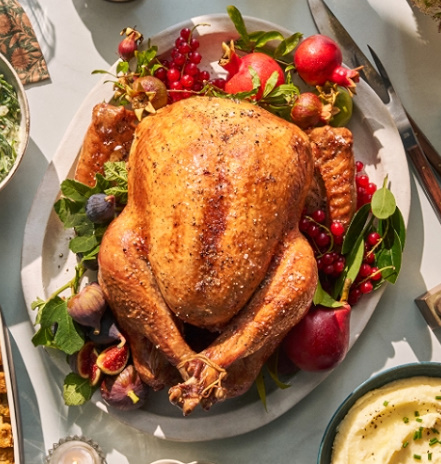
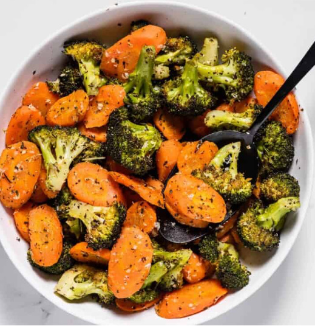
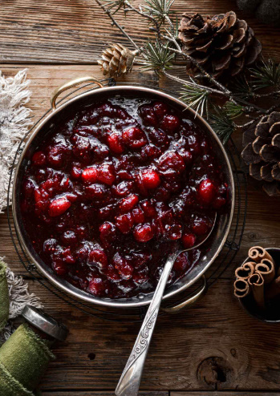
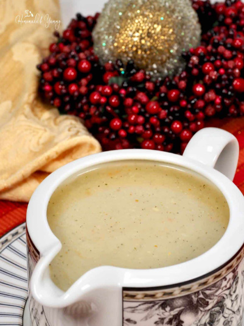

My Favorite Christmas Meals
As everyone knows, Christmas Food is one of my favorite parts of celebrating this special season. Every meal has its own unique taste, which brings so much joy into our souls, and all the smells of each food that has been made in the home make the space feel extra special. Here are a few of my favorite foods that my Grandma and Grandpa love to make for Christmas dinner.





